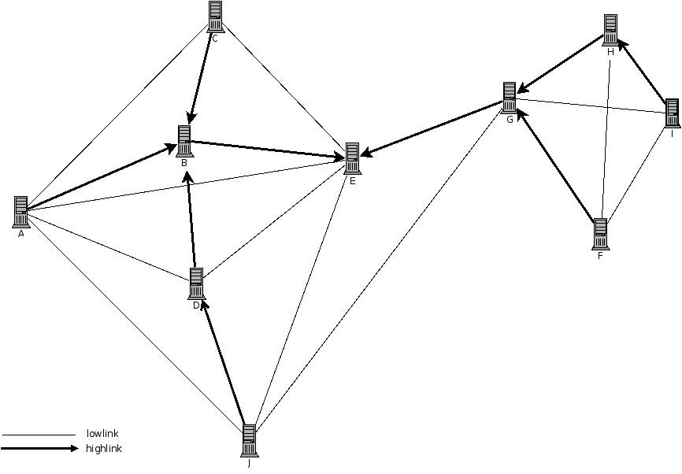
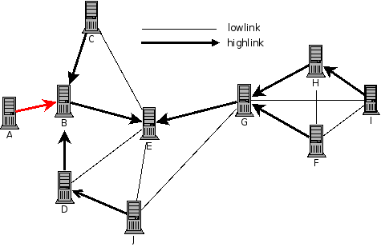
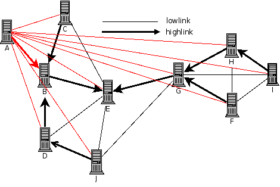

Introduction
Ce document décrit le protocole utilisé par P2Pfs pour établir les connexions entre les peers, et pour échanger les fichiers à travers le réseau.
Nous partirons avec la topologie décrite ci-dessus :
- Les peers (A,B,C,D,E,J) sont tous connectables les uns aux autres, mis à part C et J.
- Les peers (F,G,H,I) sont tous connectables entre eux.
- Les peers J et G peuvent se connecter entre eux.
Avec ce protocole, nous distinguons deux types de connexions :
- highlink: Lorsqu'un peer tente de se connecter à un autre peer pour la première fois et qu'il tente de synchroniser.
- lowlink: Ce sont les connexions utilisées pour les transferts. Chaque peer tente de se connecte en lowlink avec tous les autres peers du réseau.
Les highlinks sont des connexions sures et assurent la présence de tel peer dans le réseau. Par
exemple, sur le schéma, si A se déconnecte de C, ça n'est pas un problème, A et C font toujours
parti du réseau.
Cependant, si A se déconnecte de B, A ne fait plus parti du réseau (et ses connexions lowlink avec tous
les autres peers sont coupées).
La transmission en broadcast de message se répandu à travers le réseau par les highlinks. Les broadcasts sont par exemple l'annonce de création, modification ou suppression d'un fichier ou d'un dossier.
En revanche, les communications d'un peer à un autre vont passer par le chemin le plus
rapide à travers les deux types de links.
Si par exemple D veut envoyer un message à G, il ne passera pas par D-B-E-G, mais par
D-E-G ou D-J-G directement.
En théorie, tous les peers sont connectés les uns aux autres. Cependant, si des links
ne peuvent pas s'établir, par exemple parce qu'une partie des peers se trouve sur un
réseau NATé, et que l'autre partie se trouve sur un autre réseau NATé, l'architecture
highlinks/lowlinks permet de guarder une stabilité du réseau.
En effet, les communications par highlinks sont sures et sont nécessaires, alors que les
communications par lowlinks ne sont pas nécessaires en soit dans le sens où de toute façon
un message pourra être relayé par highlinks entre deux peers qui ne sont pas connectés
directement.
Dans notre exemple, on peut supposer que les peers (G,H,I,H) font parti d'un réseau NATé 192.168.0.0, et que seul G est accessible depuis l'extérieur. Les peers (A,B,C,D,E,J) seraient par exemple sur Internet, avec les éventuels problèmes de connexion d'un à un autre qu'on peut rencontrer.
Établissement de connexion d'un peer vers un réseau
Initialisation
Nous imaginons un cas où A vient de se lancer, et souhaite se connecter à B afin de rejoindre le réseau.
Tout d'abord à l'établissement de la connexion, A envoie un HELLO afin de se présenter :
(NB: les identifiants sont theorie des valeurs numériques (sur 32 bits, non signés), mais dans le cadre des spécifications nous allons les représenter sous forme alphabétique)
Header: src=A, dst=0, type=NET_HELLO
Args: Now=12315313
Version=p2pfs 0.1
Link=high
Tout d'abord, il faut savoir que si c'est le premier lancement de p2pfs avec cette conf là, il va déterminer LUI MEME son identifiant, avec la méthode du UUID. Nous considérons donc que cet identifiant est unique.
La destination 0 indique que c'est un broadcast en temps normal, mais en l'occurence, ne connaissant pas l'identité du destinataire, nous mettons une valeur nulle dans ce champ.
Now permet d'indiquer à B mon heure locale, et ainsi celui-ci peut déterminer la
différence avec la sienne, ce qui sera extremement utile pour les dates sur les fichiers, etc.
Nous comparons enfin la version pour être certain que A est compatible avec B.
A indique à B qu'il est un highlink, du coup B vérifie si il n'existe pas sur le réseau déjà un peer ayant l'ID A. Si tel était le cas, il répondrait un message CHANGE_YOUR_ID et A devrait en créer un autre et le réenvoyer.
B réponds maintenant :
Header: src=B, dst=A, type=NET_HELLO
Args: Now=12315310
Version=p2pfs 0.1
Link=high
A reçoit le message et sait maintenant que son interlocuteur est B, et détermine lui même la différence de timestamp.
B envoie un message PEER_CONNECT en broadcast à tous ses highlinks à part A, afin d'annoncer que A vient de se connecter comme highlink :
Headers: src=B, dst=0, type=NET_PEER_CONNECTION Args: [A]
B envoie ce message à C, D et E. C est seul donc ne l'envoie à personne. D l'envoie à J.
E envoie son message à G qui relaie à l'ensemble de ses autres highlinks suivant le
même principe
Synchronisation
Maintenant, A veut annoncer qu'il aimerait commencer le merge (ce qui de toute façon était inévitable en sa qualité de highlink). Il permet de donner quelques informations utiles pour le merge :
Header: src=A, dst=B, type=NET_START_MERGE Args: last_view=1234
last_view est utilisé pour savoir quelle est la dernière visite du Peer, et ainsi lui annoncer les modifications qui ont été effectuées sur l'arbre des fichiers depuis.
B réponds sans attendre en balançant tout d'abord la liste des peers :
Header: src=B, dst=0, type=NET_PEER_CONNECTION Args: PeerList=[C,D,E]
Header: src=D, dst=0, type=NET_PEER_CONNECTION Args: PeerList=[J]
Header: src=E, dst=0, type=NET_PEER_CONNECTION Args: PeerList=[G]
Header: src=G, dst=0, type=NET_PEER_CONNECTION Args: PeerList=[F,H]
Header: src=H, dst=0, type=NET_PEER_CONNECTION Args: PeerList=[I]
Tout d'abord B indique les highlinks qui sont directement sur lui. Ensuite il envoie de la part de D les links qui sont sur D, à savoir J, pareil pour E avec G, pareil pour G avec G et F, pareil pour H avec I.
Ceci permet de savoir à A quelle est exactement l'architecture du réseau en highlin.
Ensuite vient la liste des fichiers et répertoires créés, modifiés ou supprimés depuis last_view.
Voici quelques messages à titre d'exemple :
Header: src=B, dst=A, type=NET_MKFILE
Args: Path=/foo/bar
Modes=modes
UID=A
GID=A
size=561489
access=156165
creation=52651
modif=651651
Header: src=B, dst=A, type=NET_RMFILE Args: Path=/bar
Enfin B envoie un message indiquant qu'il a fini :
Header: src=B, dst=A, type=NET_END_OF_MERGE
C'est maintenant au tour de A d'envoyer ses peers (il n'en a pas, ça tombe bien), puis ses fichiers.
Enfin, il fini par un NET_END_OF_MERGE :
Header: src=A, dst=B, type=NET_END_OF_MERGE
B s'empresse de répondre :
Header: src=B, dst=A, type=NET_END_OF_MERGE_ACK
Connexions lowlink
Maintenant que A a fini de merger avec B, il va tenter de se connecter à chacun des peers.
Il va tout simplement faire un par un les peers. Lorsque la connexion est impossible, il relance une tentative toutes les X secondes, avec à chaque fois X multiplié par deux.
En cas d'établissement de la connexion, elle se déroule comme suit :
Message HELLO envoyé par A à C :
Header: src=A, dst=C, type=NET_HELLO
Args: Now=1561525
Version=p2pfs 0.1
Link=low
C sait donc que c'est un lowlink. Il regarde l'ID de A, et dans le cas où personne sur le réseau ne possède cet ID, ou si la personne qui possède cet ID est déjà marqué comme connecté, il rejete le client.
C réponds par :
Header: src=C, dst=A, type=NET_HELLO
Args: Now=51586
Version=p2pfs 0.1
Link=low
Et la connexion s'arrête là !
Conclusion
La connexion s'établie entre A et le reste du réseau, de façon tout à fait sympatoche.